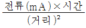
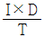
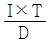
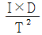
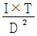
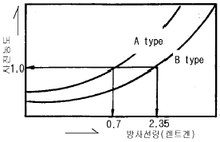

방사선비파괴검사기능사 (2004-04-04 기출문제)
1과목: 방사선투과시험법
1. 초음파탐상시험에 사용되는 기계적, 전기적으로 안정하고 액체에 불용성이며 사용수명이 긴 것은 어떤 진동자로 만든 탐촉자인가?
- 황산리튬
- 티탄산 바륨
- 수정
- 로켈레(Rochelle)염
(정답률: 알수없음)

2. 다음 중 비파괴검사에 대한 설명으로 올바른 것은?
- 미세한 표면균열 검출감도는 방사선투과검사가 가장 우수하다.
- 자분탐상시험에서는 선형자장보다 원형자장이 탈자하기 어렵다.
- 침투탐상시험에서는 결함의 폭이 깊이보다 클 경우에 검출감도가 높다.
- 와전류탐상시험을 이용하면 결함의 종류, 크기, 깊이를 정확히 판정할 수 있다.
(정답률: 알수없음)
3. 침투탐상시험에 대한 설명으로 맞는 것은?
- 추천된 침투시간은 온도에 의해 영향을 받는다.
- 검사체의 온도가 52℃이상이면 침투제가 결함에 들어가지 못한다.
- 16℃ 이하에서는 침투탐상시험은 할수 없다.
- 침투시간은 온도에 의해 영향을 받지 않는다.
(정답률: 알수없음)
4. X선관 내부의 양극에 대한 설명으로 틀린 것은?
- 원자번호가 높아야 한다.
- 용융 온도가 높아야 한다.
- 열전도성이 좋아야 한다.
- 높은 증기압이어야 한다.
(정답률: 알수없음)
5.

의 공식은 다음중 어느 것에 해당되는가?- 상호법칙
- 노출인자
- 사진의 명암도
- 안전거리 법칙
(정답률: 알수없음)
6. 방사선발생장치에서 필라멘트와 포커싱 컵(focusing cup) 은 다음 무엇의 필수 부품인가?
- 음극
- 양극
- 정류기
- X-선 트랜스
(정답률: 알수없음)
7. 양극이 텅스텐(원자번호 74)으로 된 X선관에 400kV의 전압을 걸어 주었을 때의 X선 전환능률은?
- 2.96%
- 1.48%
- 0.75%
- 0.14%
(정답률: 알수없음)
8. X선 발생장치에서 후드에 대한 설명으로 틀린 것은?
- 중심축으로부터 이탈된 X선빔을 제거한다.
- 높은 유전성의 기체로 냉각제의 역할을 한다.
- 텅스텐 표적으로부터의 산란을 차폐하여 준다.
- 양극에서 직접 불필요한 방사선을 제거하여 준다.
(정답률: 알수없음)
9. 공업용 X선 장치의 실용 X선 관전압을 10~400kV 정도 얻기 위해서 가장 유효한 전자 가속방식은?
- 공진 변압기
- 철심 변압기
- 선형 발전기
- 정전 발전기
(정답률: 알수없음)
10. X선과 γ선의 차이점 설명으로 틀린 것은?
- 발생원리가 다르다.
- γ선의 에너지는 임의로 조절이 가능하다.
- X선은 전원(電源)이 필요하나 γ선은 필요없다.
- 사용하지 않을 때도 γ선원은 차폐를 해야 한다.
(정답률: 알수없음)
11. 방사선에 관한 다음 설명중 잘못된 것은?
- 조사선량은 광자 및 β선에 적용하는 양이다.
- 매초당 붕괴수(dps)는 방사능의 단위이다.
- 단위 eV로 입자의 질량을 나타낼 수 있다.
- 흡수선량은 모든 방사선에 적용할 수 있는 양이다.
(정답률: 알수없음)
12. 계조계의 배치에 관한 일반적인 사항으로 옳지 못한것은?
- 시험부의 선원측에 배치
- 시험부에 걸쳐 양쪽에 되도록 멀리 배치
- 시험부중앙에서 과히 떨어지지 않은 모재면상에 배치
- 계조계의 두께가 변화하는 방향이 시험부와 평행되게 배치
(정답률: 알수없음)
13. 방사선 투과사진 필름에 직접 닿는 연박증감지의 주요 작용은?
- 일차방사선보다 산란방사선을 더 증감(增減)시킨다.
- 투과사진 상의 명암도를 증가시킨다.
- 산란방사선보다 일차방사선을 더 증감(增減)시킨다.
- 투과사진 상의 명암도를 감소시킨다.
(정답률: 알수없음)
14. 방사선투과시험에서 노출선도에 의한 투과촬영시 다음 중 고려하지 않아도 되는 것은?
- 피사체의 재질
- 관전압 및 관전류
- 결함의 종류
- 필름 및 증감지의 종류
(정답률: 알수없음)
15. 방사선의 노출인자를 구하는 공식은? (단, I : 선원의 강도, T : 시간, D : 선원ㆍ필름간 거리)




(정답률: 알수없음)
16. 그래프에서 300mAㆍsec의 노출조건으로 A타입 필름의 농도가 1.0 이 되었다. B타입의 필름으로 사진농도가 1.0 이 되려면 노출조건은?

- 1mAㆍsec
- 10mAㆍsec
- 100mAㆍsec
- 1000mAㆍsec
(정답률: 알수없음)
17. SFD(선원, 필름간 거리) 80㎝로서 촬영하는데 10분 노출하여 적당한 사진을 구하였다. 이것을 SFD 40㎝로 촬영하고자 한다. 다른 조건은 동일할 때 필요한 노출 시간은?
- 2.5분
- 5분
- 20분
- 40분
(정답률: 알수없음)
18. X선 장치로 투과시험을 할 때 사진의 상질에 직접 영향을 주지 않는 인자는?
- 선원 - 필름간 거리
- 비방사능
- 관전압
- 초점의 크기
(정답률: 30%)
19. X선 튜브의 초점으로부터 1m 거리에 필름을 부착하고 주어진 노출 조건하에서 적절한 투과사진의 농도를 얻을 수 있었다. 필름을 50㎝의 거리에 놓고 작업을 하고자 한다면 다른 조건은 그대로 두고 노출시간만 조정하고 싶을 때의 경우로 맞는 것은?
- 변화시킬 필요가 없다.
- 처음 노출시간의 80%만 노출하면 된다.
- 처음 노출시간의 55%만 노출하면 된다.
- 처음 노출시간의 25%만 노출하면 된다.
(정답률: 알수없음)
20. 다음 중 방사선투과시험시 노출도표에 명시하지 않아도 되는 것은?
- 장비명칭 및 제조년월일
- 증감지의 종류와 두께
- 사진농도와 현상조건
- 선원과 시험체와의 거리
(정답률: 알수없음)
2과목: 방사선안전관리 관련규격
21. 방사선투과시험시 동일한 결함이라도 조사 방향에 따라 식별하는데 영향을 받는 것은?
- 원형기공
- 균열
- 개재물
- 용입불량
(정답률: 알수없음)
22. 현상후 필름에 뿌연 안개현상(Fogging)이 나타나는 주된 원인이 아닌 것은?
- 사용전 필름의 보관 상태 불량
- 암등에 의한 과도한 노출
- 현상액의 온도 상승
- 정지액의 능력 저하
(정답률: 알수없음)
23. 방사선투과시험시 계조계를 사용하는 이유는?
- 투과사진의 콘트라스트를 판단키 위해
- 필름의 입상성을 판단키 위해
- 촬영 위치 관계를 판단키 위해
- 투과사진의 식별도를 판단키 위해
(정답률: 알수없음)
24. 방사성 동위원소 핵종에 있어서 동중성자 핵종끼리 짝지어진 것은?
- 92U235, 92U238
- 7N15, 8O15
- 7N14, 8O15
- 27Co60, 27Co60m
(정답률: 알수없음)
25. 다음 중 단강품에 주로 이용되지 않는 비파괴검사법은?
- 방사선투과검사
- 초음파탐상검사
- 침투탐상검사
- 자분탐상검사
(정답률: 알수없음)
26. 방사선량의 단위중 전리된 이온쌍의 정(正)또는 부(負)의 전기량이 공기 1[kg]에 대하여 2.58×10-4쿨롬(coulomb)일 때 그것을 단위로 X선 또는 γ선량을 표시하는 것은?
- 1 R(렌트겐)
- 1 Sv(서베이)
- 1 Gy(그레이)
- 1 joule(줄)
(정답률: 알수없음)
27. 방사선과 관계있는 양과 단위를 표시하였다. 짝지음이 틀린 것은?
- 선량당량 - Rhm
- 조사선량 - R
- 방사능 - Ci
- 흡수선량 - Gy
(정답률: 알수없음)
28. Ir-192 10Ci선원으로 부터 5m 지점에서의 시간당 선량율은? (단, Ir-192 1Ci당 1m거리에서 1시간당 선량율은 0.5R/h로 간주한다.)
- 0.⑤R/h
- 0.2R/h
- 1R/h
- 5R/h
(정답률: 알수없음)
29. 다음 중 Ir-192의 방사선이 인체에 피폭되었을 때 나타날 수 있는 상호 작용은?
- 광전효과, 콤프톤 효과
- 콤프톤 효과, 힐 효과
- 전자 쌍생성, 삼전자 생성
- 삼전자 생성, 광핵 반응
(정답률: 알수없음)
30. KS D 0242(`02년도) 알루미늄 평판 접합 용접부의 방사선투과시험시 선원과 투과도계 사이의 거리는 시험부의 유효 길이의 몇 배이상 인가? (단, 상질은 A급이다.)
- 2배
- 3배
- 5배
- 7배
(정답률: 알수없음)
31. KS D 0242(`02년도)에 의거하여 방사선투과검사할 때 모재의 두께가 얼마 미만의 시험부 촬영시에는 계조계를 이용하여 시험부와 동시에 촬영하도록 규정하고 있는가?
- 10mm
- 20mm
- 40mm
- 80mm
(정답률: 알수없음)
32. 3 반감기가 지난 후의 방사능은 최초의 방사능에 대해 약 몇 %인가?
- 50%
- 30%
- 12.5%
- 25%
(정답률: 알수없음)
33. 원자력법시행령에 의한 비파괴검사 목적 이동사용자의 허가기준으로서 장비에 대한 기준이 올바른 것은?
- 방사선투과 검사장비 : 1대이상
- 방사선측정 장비중 방사선 측정기 : 2대이상
- 방사선방호 장비중 경고등 : 5개이상
- 방사선측정 장비중 방사선 경보기 : 10개이상
(정답률: 알수없음)
34. KS B 0845에 규정된 흠 분류 방법중 모재의 두께가 12㎜ 초과 48㎜ 미만인 경우 제2종의 흠 분류로 틀린 것은?
- 1류 : 모재 두께의 1/4 이하
- 2류 : 모재 두께의 1/3 이하
- 3류 : 모재 두께의 3/4 이하
- 4류 : 흠 길이가 3류보다 긴 것
(정답률: 알수없음)
35. KS B 0845 강용접 이음부의 방사선투과 시험방법에 따라 계조계를 사용할 경우 계조계의 치수 허용차는 두께에 대하여 몇 %인가?
- ±2%
- ±3%
- ±5%
- ±10%
(정답률: 알수없음)
36. 강용접부의 방사선투과시험에서 KS B 0845에 따라 최고 농도 3.2의 투과사진을 관찰하고자 할 때 어떤 관찰기가 필요한가?
- D10형
- D20형
- D30형
- D40형
(정답률: 알수없음)
37. KS B 0845에 따라 강용접 이음부의 방사선투과 시험 방법에서 모재두께 15mm 강판의 맞대기 용접에 대한 흠 상의 분류에서 제1종 흠이 1개인 경우 흠의 긴지름이 얼마 이하일 때 흠점수로 산정하지 않는가? (즉 산정하지 않는 흠의 치수는?)
- 1.0mm
- 0.8mm
- 0.7mm
- 0.5mm
(정답률: 알수없음)
38. KS B 0845에 따라 25형 계조계를 사용하려 한다. 다음 중 25형 계조계의 두께로 알맞은 것은?
- 1.0㎜
- 2.0㎜
- 3.0㎜
- 4.0㎜
(정답률: 알수없음)
39. KS B 0845에 따라 강판의 맞대기 이음부의 촬영시 선원과 필름간의 거리는 시험부의 선원쪽 표면과 필름간의 거리의 m배 이상이다. 여기서 계수 m의 값으로 맞는 것은? (단, f는 선원치수, d는 투과도계의 식별최소 선지름)
- 상질이 A급 일 때 2f/d 또는 7중 큰 쪽의 값
- 상질이 B급 일 때 2f/d 또는 6중 큰 쪽의 값
- 상질이 A급 일 때 3f/d 또는 6중 큰 쪽의 값
- 상질이 B급 일 때 3f/d 또는 7중 큰 쪽의 값
(정답률: 알수없음)
40. KS D 0227에 따라 주강품 방사선 투과사진의 흠의 영상분류시 틀린 설명은?
- 블로홀에 대해서는 흠점수를 구하여 종류를 결정한다.
- 갈라짐이 존재하는 경우는 항상 4류로 한다.
- 개재물에 대하여는 흠점수를 구하여 종류를 결정한다.
- 나뭇가지 모양의 슈링키지에 대해서는 흠면적을 구하여 종류를 결정한다.
(정답률: 알수없음)
3과목: 금속재료일반 및 용접 일반
41. 다음 중 응용 프로그램과 비교하여 컴퓨터의 시스템 프로그램이 하는 일과 거리가 먼 것은?
- 데이터와 파일을 관리하는 일
- 업무의 연속 처리를 위한 스케줄을 관리하는 일
- 사용자가 작성한 프로그램을 기계어로 바꾸어주는 일
- 게임이나 그래픽 또는 CAD 등의 작업을 컴퓨터로 처리하기 위한 프로그램을 작성하는 일
(정답률: 알수없음)
42. 인터넷에서 접속된 컴퓨터간에 전자우편 전송을 위해 사용하는 규약은?
- SNMP
- TCP/IP
- SMTP
- SLIP/PPP
(정답률: 알수없음)
43. 다음 중 인터넷을 사용할 때 영문으로 표현된 도메인이름을 컴퓨터가 가지고 있는 IP주소로 변환시켜 주는 것은?
- DTS
- DNT
- DNS
- DNP
(정답률: 알수없음)
44. 다음 중 컴퓨터의 주변 장치에 속하지 않는 것은?
- 입력 장치
- 보조 기억 장치
- 제어 장치
- 출력 장치
(정답률: 알수없음)
45. 파일을 전송할 때 사용하는 통신 프로토콜로, 원격 호스트에 접속하기 위해 사용자의 계정이 필요하나, 계정이 없이도 접속하여 호스트를 사용할 수 있도록 해 주는 프로토콜은?
- FTP
- TFP
- PTF
- FSND
(정답률: 알수없음)
46. 다음 중 전, 연성이 가장 큰 것은?
- 백금
- 금
- 텅스텐
- 주철
(정답률: 알수없음)
47. 금과 은의 기호로 맞는 것은?
- Mg, Mn
- Zn, Al
- Sn, Pb
- Au, Ag
(정답률: 알수없음)
48. 순철의 동소변태에 해당되는 온도는?
- 약 210℃
- 약 700℃
- 약 912℃
- 약 1600℃
(정답률: 알수없음)
49. 상온에서 순철(α 철)의 결정 격자는?
- 면심입방격자
- 조밀육방격자
- 체심입방격자
- 정방격자
(정답률: 알수없음)
50. 충격시험은 무엇을 조사하기 위하여 사용하는가?
- 인장강도
- 경도와 연성
- 압축강도
- 인성과 취성
(정답률: 알수없음)
51. 강 중에서 적열메짐을 가장 일으키기 쉬운 원소는?
- 규소
- 인
- 황
- 망간
(정답률: 알수없음)
52. 동일한 조건에서 탄소강은 탄소량에 따라 부식 상태가 어떻게 되는가?
- 탄소가 많을수록 부식되기 쉽다.
- 탄소가 적을수록 부식되기 쉽다.
- 탄소가 일정할수록 부식되기 쉽다.
- 탄소량과 부식과는 관계없다.
(정답률: 알수없음)
53. 철강 제조시 황을 제거하는데 가장 효과적인 원소는?
- 규소
- 탄소
- 수소
- 망간
(정답률: 알수없음)
54. 강과 주철을 구분하는 탄소함유량(%)은?
- 약 0.1
- 약 0.5
- 약 1.0
- 약 2.0
(정답률: 알수없음)
55. 청동합금에 탄성, 내마모성, 내식성을 향상시키고 유동성 증가를 위하여 첨가하는 원소는?
- 납
- 망간
- 아연
- 인
(정답률: 알수없음)
56. 철-탄소계에서 공석반응에 해당되는 것은?
- γ(고용체) ⇄ α (고용체) + 시멘타이트
- L (액체) ⇄ γ(고용체) + 시멘타이트
- L (액체) ⇄ 레데뷰라이트
- α (고용체) ⇄ γ(고용체) + 시멘타이트
(정답률: 알수없음)
57. 금속적 성질과 비금속적 성질을 같이 나타내는 것은?
- 아금속(metalloid)
- 중금속(heavy metal)
- 연성금속(ductility metal)
- 경금속(light metal)
(정답률: 37%)
58. 다음 중 전기저항열을 이용하는 용접법이 아닌 것은?
- 시임 용접
- 플래시 맞대기 용접
- 프로젝션 용접
- 일렉트로 가스 용접
(정답률: 알수없음)
59. 다음 용접부의 피로강도에 영향을 주는 것에 대한 설명중 틀린 것은?
- 용접부의 결함
- 용접봉의 표면 형상
- 용접부의 형태
- 용접구조상의 응력 집중
(정답률: 알수없음)
60. 아크전류가 200A, 아크전압이 25V, 용접속도가 15 cm/min 인 경우 용접길이 1cm당 발생하는 용접입열은 몇 J/cm 인가?
- 15000
- 20000
- 25000
- 30000
(정답률: 알수없음)